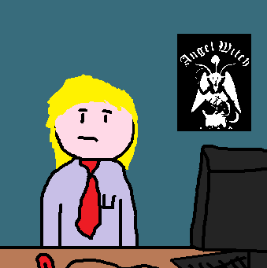

Sir Clive "James" Python, OBE, KCSG, BBC, OMGWTFBBQ, .JPG, better known as OwlMan, is an English Neocities user, who has been an active user on Neocities since he joined in December 2015 on his 14jammar account. 
Clive Python has been running his owlman.neocities.org website since early 2016. The site is home to his articles, his videos, and his newsletter.
Along with Neocities, OwlMan is also very active on The Internet Archive, where he tries to archive as much of the Web as he can, he has also archived his whole site on there. OwlMan can be very outspoken on archiving the Web that fellow Neocities user, Strata, asked him if "Is it possible that you have an archival fetish?" as a joke.
Some of his favourite things apart from Neocities is ASCII art, playing Doom WADs, and playing heavy metal music like Saxon, Motörhead, and Judas Priest.
He also runs his own Discord server, The People's Republic of OwlMania™ Discord Server, that was one of the birth places of Cunt Yolk - a band he has helped in the past. OwlMan also made the infamous "Cat Pr0n" drawing.
OwlMan has been apart of some noticeable events on Neocities, such as help make MS Life, being of of only two people to take part in SpookyJay's WebsiteJam, and his "I'm Quitting Neocities" blog post, making fun of the Network Neighborhood.
I. OwlMan's website https://owlman.neocities.org/
II. OwlMan's dashboard https://neocities.org/site/owlman
III. OwlMan's about me page https://owlman.neocities.org/clive/
This page was last updated: 29/06/2018 @ 02:02
In total this page has had 0 updates since it was uploaded.